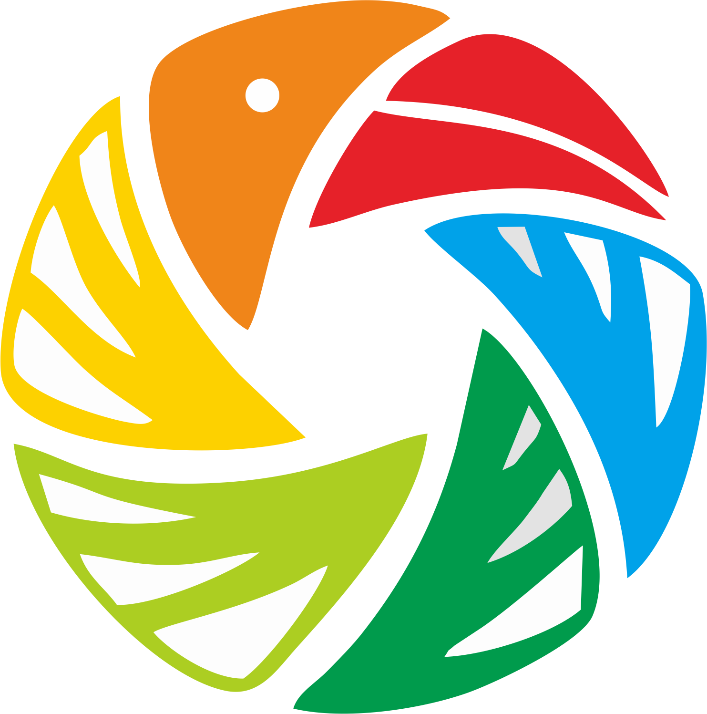

TEAM BIRDS IVIEW
Computer Vision Indentification
for Smart Bird Feeders
Over 50 million people spend approximately 40 billion
dollars on gear and traveling to participate in bird watching, every year.
David Plemmons, bird enthusiast and entrepreneur, has been working over the
last 3 years to bring the bird-enthusiast community even
closer together by creating a bird feeder with an
integrated camera that allows you to view birds from a live stream video.
David's plan is to educate people on the importance
of bird-watching and bird indentification. From a scientific perspective,
the identification of individual birds would present avian researchers
with a completely new dimension of data. This would allow researchers
to better study trends within different bird populations.
Team Bird's iView is going to expand David's idea and create an
AI model that will be able to identify specific species
of birds from the images captured by the pEEp bird
feeder. Additionally, we will be creating an easy way to share
user findings which will allow users to connect with other
members of the bird community.